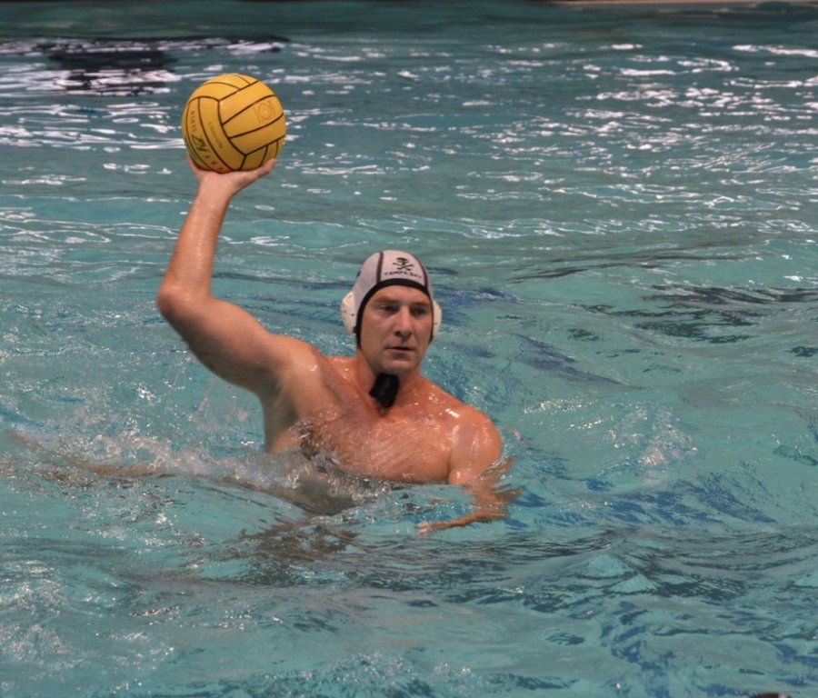
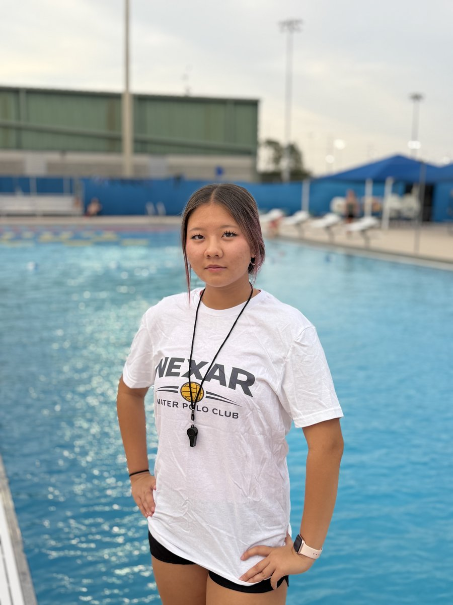

Championship experience. Individual attention. A genuine love for developing young athletes.

Asian Champion · Kazakhstan National Team · Land O' Lakes Location
Coach Alex competed at the highest levels of water polo — representing Kazakhstan at the Asian Championships and earning gold with the National Team. That experience taught him that elite performance isn't born, it's built through disciplined, technique-first coaching.
Now based in Wesley Chapel, FL, Coach Alex brings that world-class perspective to youth athletes aged 8–18. His approach: meet every child where they are, teach fundamentals that last a lifetime, and make training something athletes genuinely love showing up for.
He also coaches the Nexar Swim Team and offers 1-on-1 sessions via Zoom or in-person — video technique analysis, college recruitment prep, and personalized athlete development.

Water Polo Coach · Temple Terrace Aquatic Center
Coach Sergey Bushuev brings decades of water polo experience, leadership, and passion for athlete development to Nexar Water Polo. His background combines high-level playing experience with a strong commitment to coaching and helping young athletes grow in the sport.
Sergey has been actively involved in water polo development across Florida, supporting youth participation, skills training, and competitive opportunities for athletes of different levels. His coaching focuses on building a strong technical foundation, improving game understanding, developing confidence in the water, and teaching the discipline needed to succeed in water polo.
With experience leading training sessions, clinics, and player development programs, Coach Sergey believes in helping athletes improve step by step while creating a positive and motivating team environment. At Nexar Water Polo, he is committed to developing confident, skilled, and disciplined athletes while helping grow the sport in the Tampa Bay area.
Train With Coach Sergey →
Kazakhstan National Athlete · Land O' Lakes Varsity · IB Scholar
Sayana is a 16-year-old competitive swimmer and water polo player with ten years in the water. She has trained at an elite level with European-coached programs and represented her country in national-level tournaments — building the technical foundation and competitive mindset she now brings to every Nexar session.
Here in Florida, she swims on the Land O' Lakes High School varsity team and works as a lifeguard at the East Pasco YMCA, where she found a real passion for coaching and mentoring younger athletes. At Nexar she is especially effective with beginners — she remembers exactly what it felt like to start.
A dedicated IB student with a 4.6 GPA, Sayana plans to pursue a career in medicine and sports health — combining her athlete's understanding of performance with a commitment to helping young athletes grow.
Train With Coach Sayana →First practice is always free — no commitment required.